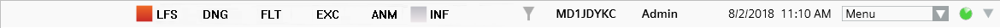
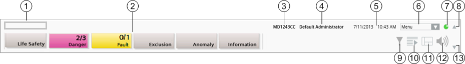

Summary Bar
Overview
The Summary bar is located along the top of the system screen, and is the main point of entry to all the functions of the management station.
By default, the Summary bar is expanded. On the left, it displays the event lamps, grouped by category, while on the right it has buttons for filtering events, opening/closing Event List, and controlling the audio alert.
When the Summary bar is collapsed to a slim bar, it has a series of small indicators that provide an overview of the pending events, grouped by category, followed by the operator menu, a system integrity indicator, and the filter icon.
Depending on the profile, it displays a specific set of event lamps, the Event Detail bar that highlights the most critical events in the system and allows you to open or close the Event List and control the audio alert.
For more details about available actions, see also Handling Events.


Summary Bar Components | ||
| Name | Description |
1 | Company logo | When you move your cursor on the logo, a tooltip tells you: Click to open the About Page. The About page displays information about the software. |
2 | Event lamps | Summarizes the active events, grouped by categories. You can click an event lamp, to open Event List filtered by that category. |
3 | Client name | Indicates the computer name on a Server, Client, or FEP station. |
4 | Logged user | Indicates the full name of the person logged onto the system. It also provides a tooltip with the user’s most important information (for example, full name, account name, language, and so on). If the user's full name is not available, user name displays instead. |
5 | Date and time |
|
6 | System menu | From here, the operator can access other functions. |
7 | System integrity indicator | Displays the status of the network connection to the management-system server. |
8 | Expand/collapse | Expands/collapses the Summary bar |
9 | Event filter | Lets you filter the events in Event List. |
10 | Open/close Event List | Shows/hides or expands/collapses the Event List window. This icon is disabled during Investigative/Assisted Treatment. |
11 | Start a new System Manager | Click to open multiple System Manager windows. |
12 | Audio Alert | Click to silence/unsilence the sound emitted by the station to notify you of events. |
13 | Show/hide | Shows/hides the Event Detail bar (available only in some configurations). |
System Integrity Indicator
The system integrity indicator, located on the Summary bar, indicates the network connection and system status. Its color and animation reflect the connection status, as follows:
| Green and animated. Network connection with the server is active and the system is healthy (that is, server running properly).
|
Red and animated. Network connection with the server is active but at least one system component is not active on the server (that is, server not running properly). NOTE: If a client disconnects form the server, this issue is visually indicated on the Summary bar by pink background, and
| |
Red and not animated. Network connection with the server is inactive.
|

A tooltip displays when you move your cursor over the indicator, and provides network connection and system status information.
Event Lamps
The events that occur in the building-control system are grouped into categories, which are color-coded by severity. Each category typically corresponds to an event lamp that displays in the Summary bar. The number of lamps and their corresponding categories depends on the event schema.
Each event lamp shows the total number of events for that category, and how many of those are unprocessed (not yet acknowledged by the operator). An event lamp will also flash if there are any unprocessed events in its category.
When the Summary bar is collapsed to a slim bar, event information appears in a reduced format (event category abbreviation and the total number of events for that category), also including icons for any event timers or applied filters.


1 | Background color | Indicates the category color of the event. The specific category colors employed are dependent on the event schema. |
2 | Event counter | Shows the total number of events for that category present in Event List (second number), and how many of those are unprocessed (first number). |
3 | Event category | Descriptive name of the category. The specific category names employed are dependent on the event schema. |
Event Lamp Display | ||
Graphical Display | Background Color and Behavior | Status |
| Solid gray. | No events for that category. |
| ||
| Flashes from gray to the category color. | New events for that category have occurred in the system, and are still unprocessed. |
| ||
| Flashes from gray to the dark category color. | Filter by category activated. New events for that category have occurred in the system and are still unprocessed. |
| ||
| Solid category color and not flashing. | There are no unprocessed events for that category. |
| ||
| Solid dark category color and not flashing. | Filter by category activated. There are no unprocessed events for that category. |


When you move the cursor over an event lamp, a tooltip provides the following information:
- Total number of events for this category
- Number of unprocessed (unacknowledged) events for this category
- Number of events for this category that have been acknowledged